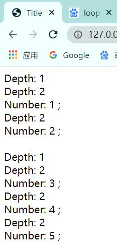

2. Jinja使用教程¶
2.1. 安装¶
输入以下指令安装jinja2：
pip install Jinja2
输入以下指令，测试模板是否安装成功，没有报错就表示安装成功：
python - c "import jinja2"
注意此处必须用双引号”
2.2. 基本语法¶
作为一个模板系统，jinja2提供了特殊的语法。我们按照它支持的语法进行编写之后，就能使用jinja2模块进行渲染。
在jinja2中，存在三种语法：
变量取值
{{ }}控制结构
{% %}注释
{# #}
2.2.1. 变量取值¶
jinja2模板中使用 {{ }} 语法表示一个变量。
它是一种特殊的占位符。当利用jinja2进行渲染的时候，它会把这些特殊的占位符进行填充/替换。
jinja2支持python中所有的Python数据类型，比如列表、字典等。
<p>this is a dicectory:{{ mydict[ 'key' ] }} </p>
<p>this is a list:{{ mylist[3] }} </p>
<p>this is a object:{{ myobject.something() }} </p>
示例：
@app.route('/test1')
def test1():
name = "Daniel"
lst = [1, 2, 3, 4]
dic = {"jj": '林俊杰', 'jay': '周杰伦'}
return render_template("test1.html", name=name, lst=lst, dic=dic)
<!DOCTYPE html>
<html lang="zh-CN">
<head>
<meta charset="UTF-8">
<meta http-equiv="x-ua-compatible" content="IE=edge">
<meta name="viewport" content="width=device-width, initial-scale=1">
<title>Title</title>
</head>
<body>
{{name}}<br>
{{lst}}
{{dic["jj"]}}
</body>
</html>
2.2.2. 控制结构¶
2.2.2.1. if语句¶
jinja2中的if语句类似与Python的if语句，它也具有单分支，多分支等多种结构。
不同的是，jinja的条件语句不需要使用冒号结尾，而结束控制语句，需要使用endif关键字。
{% if daxin.safe %}
daxin is safe.
{% elif daxin.dead %}
daxin is dead
{% else %}
daxin is okay
{% endif %}
2.2.2.2. for循环¶
jinja2中的for循环用于迭代Python的数据类型，包括列表，元组和字典。
在jinja2中不存在while循环。
迭代列表：
<ul>
{% for user in users %}
<li>{{ user.username|title }}</li>
{% endfor %}
</ul>
迭代字典：
<dl>
{% for key, value in my_dict.iteritems() %}
<dt>{{ key }}</dt>
<dd>{{ value}}</dd>
{% endfor %}
</dl>
可以看到，for循环的使用方式和Python比较类似，但是没有了句尾的冒号，另外需要使用endfor作为结尾。
当然也可以加入else语句，在循环正确执行完毕后执行。
示例：
@app.route('/test2')
def test2():
num = 7
name = "Daniel"
lst = [1, 2, 3, 4]
dic = {"jj": '林俊杰', 'jay': '周杰伦'}
return render_template("test2.html", name=name, lst=lst, dic=dic, num=num)
<!DOCTYPE html>
<html lang="zh-CN">
<head>
<meta charset="UTF-8">
<meta http-equiv="x-ua-compatible" content="IE=edge">
<meta name="viewport" content="width=device-width, initial-scale=1">
<title>Title</title>
</head>
<body>
{{name}}<br>
{{lst}}
{{dic["jj"]}}
{{dic.jay}}
{% if num %}
<h3>ok</h3>
{% else %}
<h3>error</h3>
{% endif %}
<br>
<ul>
{% for index in lst %}
<li> {{ index }} </li>
{% endfor %}
</ul>
</body>
</html>

在for循环中，jinja2还提供了一些特殊的变量，用以来获取当前的遍历状态：
| 变量 | 描述 |
|---|---|
| loop.index | 当前迭代的索引（从1开始） |
| loop.index0 | 当前迭代的索引（从0开始） |
| loop.first | 是否是第一次迭代，返回bool |
| loop.last | 是否是最后一次迭代，返回bool |
| loop.length | 序列中的项目数量 |
| loop.revindex | 到循环结束的次数（从1开始） |
| loop.revindex0 | 到循环结束的次数（从0开始） |
| loop.depth | 当前循环在递归中的层级（从1开始） |
| loop.depth0 | 当前循环在递归中的层级（从0开始） |
例如：
<!DOCTYPE html>
<html lang="en">
<head>
<meta charset="UTF-8">
<title>Title</title>
</head>
<body>
{% for item in [[1,2],[3,4,5]] recursive %}
Depth: {{ loop.depth }}<br>
{% if item[0] %}
{{ loop(item) }}<br>
{% else %}
Number: {{ item }} ;<br>
{% endif %}
{% endfor %}
</body>
</html>

2.2.3. 注释¶
jinja2模板中使用 {# #} 语法进行注释，注释的内容不会在html中被渲染出来。
{# COMMENT #}
如：
{# This is jinja code
{% for file in filenames %}
...
{% endfor %}
#}
2.3. Jinja中的过滤器¶
变量可以通过 “过滤器” 进行修改。过滤器可以理解为，是jinja2里面的内置函数和字符串处理函数。
常用的过滤器有：
| 过滤器 | 说明 |
|---|---|
| safe | 渲染时值不转义 |
| capitialize | 把值的首字母转换成大写，其他子母转换为小写 |
| lower | 把值转换成小写形式 |
| upper | 把值转换成大写形式 |
| title | 把值中每个单词的首字母都转换成大写 |
| trim | 把值的首尾空格去掉 |
| striptags | 渲染之前把值中所有的HTML标签都删掉 |
| join | 拼接多个值为字符串 |
| replace | 替换字符串的值 |
| round | 默认对数字进行四舍五入，也可以用参数进行控制 |
| int | 把值转换成整型 |
使用这些过滤器只需要在变量后面使用竖线(|)分割。
多个过滤器可以链式调用，前一个过滤器的输出会作为后一个过滤器的输入。
{{ 'abc' | captialize }}
# Abc
{{ 'abc' | upper }}
# ABC
{{ 'hello world' | title }}
# Hello World
{{ "hello world" | replace( 'world' , 'daxin' ) | upper }}
# HELLO DAXIN
{{ 18.18 | round | int }}
# 18
2.4. Jinja中的宏¶
宏类似于Python中的函数。我们在宏中定义行为，还可以进行传递参数，就像Python中的函数一样。
在宏中定义一个宏的关键字是macro，后面跟其宏的名称和参数等
{% macro input(name,age=18) %}
# 定义宏，参数age的默认值为18
<input type = 'text' name= "{{ name }}" value= "{{ age }}" >
{% endmacro %}
调用方法也和Python的类似
<p>{{ input( 'daxin' ) }} </p>
<p>{{ input( 'daxin', age=20) }} </p>
宏像函数一样，也可以被集合在一起（一个HTML中）,用的时候像调用库函数一样import使用。
这样可以让我们的主HTML文件，内容更加简练。节省空间，可读性更强。
例如，将一个macro放在’_macro.html’中，然后引入到我们的文件里：
{% import '_macro.html' as ui %}
这里注意，必须要加 as 库名 ，不然我们引用函数的时候，都不知道从哪里来的函数。
调用的方式也有点改变：
{{ ui.input('username') }}
{{ ui.input('password',type='password') }}
2.5. Jinja的继承和Super函数¶
Jinja2中最强大的部分就是模板继承。
模板继承允许我们创建一个基本(骨架)文件，其他文件从该骨架文件继承，然后针对自己需要的地方进行修改。
Jinja2的骨架文件中，利用block关键字表示其包涵的内容可以进行修改。每个block都代表一段html语句块，这些块可以在当前的html文件中定义，也可以在别的html中定义。
定义的时候，如果py文件链接的是home.html，但home.html引用了base.html的模板，home.html 顶部必须说明继承关系。
{% extends 'base.html' %}
块的定义格式，endblock 后面块名可以省略，有时候加上会让结构更加明晰
{% block 块名 %}
块内容
{% endblock (块名)%}
定义了块之后，base.html中对应的块，就会被这些块内容覆盖，也可以既不覆盖通用模板的内容，又在其基础上，增加一些东西。
以下面的骨架文件base.html为例：
<! DOCTYPE html>
<html lang="en">
<head>
{% block head %}
<title>
{% block title %}title{% endblock %} - My Webpage
</title>
{% endblock %}
</head>
<body>
<div id="content">
{% block content %}
<p>this is content</p>
{% endblock %}
</div>
<div id="footer">
{% block footer %}
<p>this is footer</p>
{% endblock %}
</div>
</body>
</html>
这里定义了四处 block，即：head，title，content，footer。
那怎么进行继承和变量替换呢？
注意看下面的文件
{% extends "base.html" %}
{# 继承base.html文件#}
{% block title %} jinja title {% endblock %}
{# 定制title部分的内容#}
{% block head %}
{{ super () }}
{# 用于获取原有的信息 #}
{% endblock %}
{% block footer %}
This is jinja footer
{% endblock %}
{# 定制footer部分的内容#}
注意，super()函数表示获取block块中定义的原来的内容。
2.6. 利用jinja进行渲染¶
jinja2模块中有一个名为Enviroment的类。这个类的实例用于存储配置和全局对象，然后从文件系统或其他位置中加载模板。
大多数应用都在初始化的时候有一个Environment对象，并用它加载模板。Environment支持两种加载方式：
PackageLoader：包加载器
FileSystemLoader：文件系统加载器
2.6.1. PackageLoader¶
使用包加载器来加载文档的最简单的方式如下：
> from jinja2 import PackageLoader,Environment
env = Environment(loader = PackageLoader( 'python_project' , 'templates' ))
# 创建一个包加载器对象
template = env.get_template( 'bast.html' )
# 获取一个模板文件
template.render(name = 'daxin' ,age = 18 )
# 渲染
其中：
PackageLoader()的两个参数为：python包的名称+模板目录名称。
get_template()：获取模板目录下的某个具体文件。
render()：接受变量，对模板进行渲染
2.6.2. FileSystemLoader¶
文件系统加载器，不需要模板文件存在某个Python包下，可以直接访问系统中的文件。